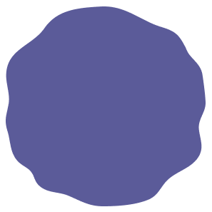
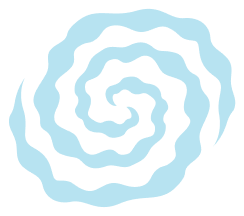
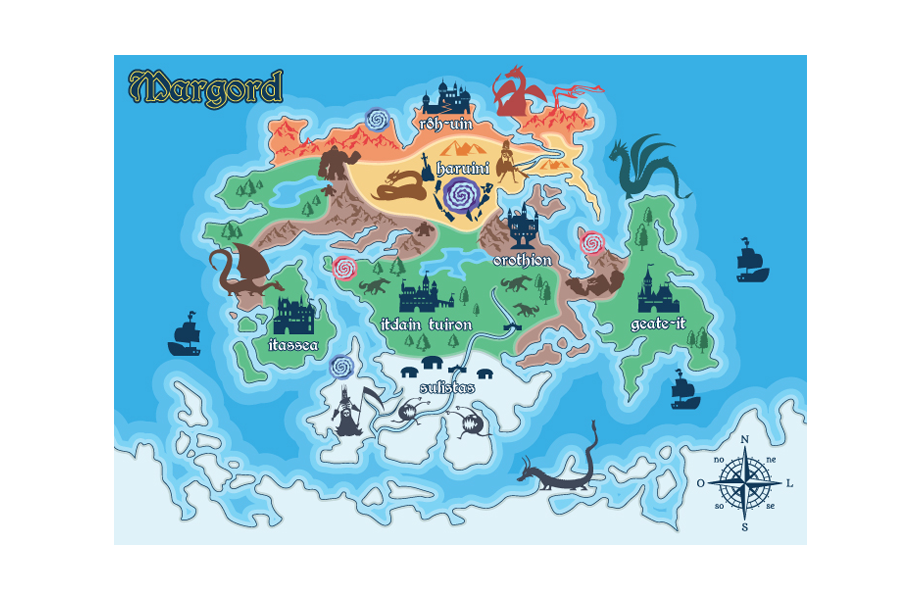
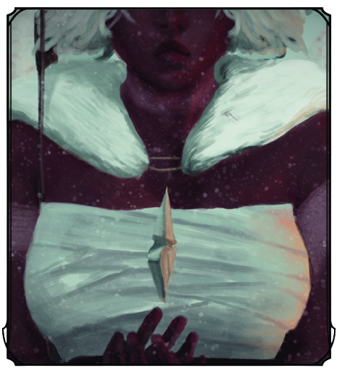
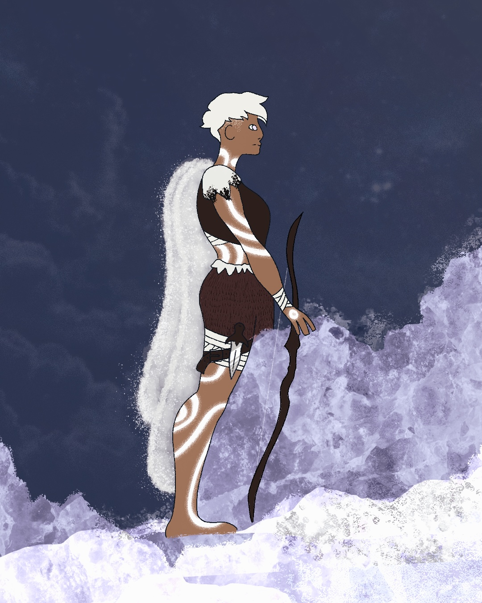
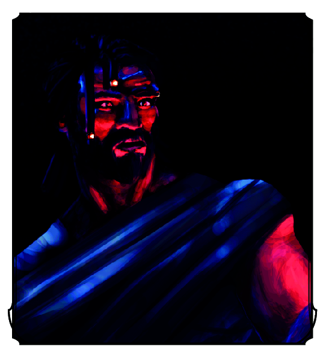
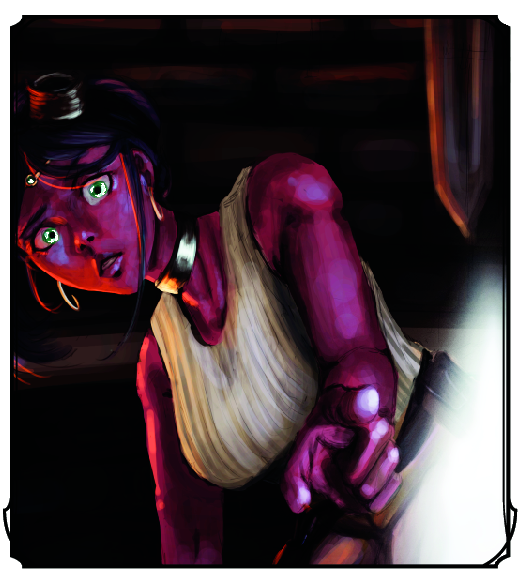
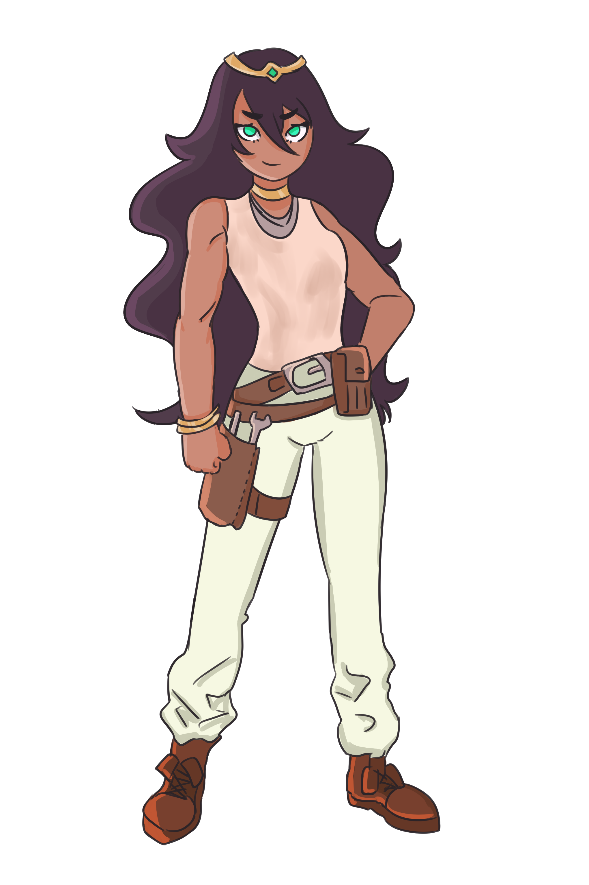
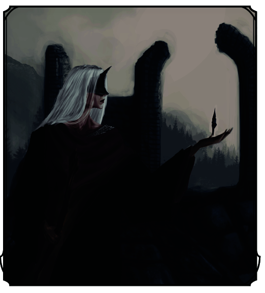

Livro Digital
Mitologias Universais 2022.2
Mitologias Universais 2022.2


Sumário
3.1. Povos do Norte ....................................................................................
3.2. Povos das Terras Centrais ....................................................................................
3.3. Povos do Sul ....................................................................................
1
Linha do Tempo
-
1000 A.CTodos os povos iam bem, desenvolvendo suas atividades, alguns provocavam guerras, destruições, mas outros levavam uma vida pacata, até que um acontecimento estranho modificou totalmente a vida desse mundos.
-
500 A.CPovos Mágicos abrem portais dimensionais para cada um dos mundos, gerando um colapso na zona cósmica, destruindo todo o universo em torno deste portal. Porém alguns povos foram sugados para dentro do portal sendo salvos.
-
459 A.CEsses heróis sugados para dentro do portal inicam uma nova jornada em busca de saber o que aconteceu juntos.
2
Mapa

3
4
Povos
5
Povos do Norte
Os Homens do norte viviam para além das cordilheiras montanhosas onde havia
campos e vales até toda a terra repousar em uma planície desértica, para além
delas, se encontravam mais cadeias montanhosas imponentes e vermelhas que se
chocavam com um mar revolto, dessas montanhas, nos confins do mundo viviam em
plenitude os acadêmicos e sábios de Rôh-uin(Rôh: Saber/ Uin - Povo) ostentavam
em suas grandes bibliotecas conhecimentos que remontavam há milênios de história.
Estes eram chamados de Andrôhi (And: Aqueles / Rôh: Saber / i: Desinência Nominal (Plural)).
Haruini é como eram chamados o povos da terra, outrora magníficos em sua arte e engenho, seus
palácios se dispunham abaixo da terra com sistemas de refrigeração por tubos de vento, grandes
colunas se erguiam adornadas com as faces de suas deusas, acima do solo um grande santuário aberto
se erguia com 4 estátuas solitárias e imponentes cada uma segurando uma concha que quando o vento soprava,
6
dependendo da direção deste, uma ou duas conchas soavam um som que ecoava por aquele deserto,
quando chovia, o sistema de drenagem levava a água para o segundo nível do subterrâneo, onde
ela se juntava em uma grande saída que jorrava como uma cachoeira em um lago, a luz que entrava
em buracos retangulares no topo da caverna em certa parte do dia iluminava 2 deusas que ficavam
uma em cada lado da cachoeira, uma olhando pra cima com seu braço direito levantado com uma
estrela em sua testa, e uma que olhava para baixo com seu braço esticado ao lago.
Toda essa beleza foi perdida na abertura dos portais, agora apenas ruínas são suspensas no ar num lugar
onde o tempo não parece passar e os corpos sem vida parecem não se decompor. Antigos monumentos
ainda em pé são encontrados no por entre as cordilheiras como saudação para os povos que
transitam nessas terras.
7
Povos das Terras Centrais
Outrora uma terra de campos verdejantes e florestas abundantes, abrigavam os reinos de Itassea
(Reino sobre o mar) ao oeste, Orothion (Rocha da montanha), Geate-It (Reino da Floresta) ao leste
e por fim o Reino transiente das muralhas do sul (Itdain Tuiron), cada reino ostentava uma bandeira
de determinada cor, com um símbolo de seu reino.
Para Itassea, um azul como o do céu, quando ainda era visto, seu símbolo era um círculo branco com a
silhueta de um barco vazado em dourado, que demonstrava seu poder sobre o mar e a lua que nascia em
grande tamanho nas suas costas e iluminava sua cidade de pedras brancas.
Para Orothion um vermelho carmesim tingia seus tecidos, seu símbolo era de um grande fogo, cujo no centro
vazava a forma de uma grande marreta, suas forjas eram suas assinaturas, pois grandes minhas obtinham,
e seus exércitos eram vastos e equipados.
Para Geate-It adotaram um tom verde profundo,
8
e uma grande árvore dourada era estampada em seu centro, exaltando a beleza de suas vastas florestas.
Para Itdain Tuiron cor preta com seus detalhes prateados, no meio de seu estandarte, uma cabeça de
cavaleiro, por ficar entre o sul e o norte, seu povo era a que mais transitava, e seus cavalos, eram
os mais velozes.
Atualmente, todos os estandartes eram vistos juntos no mesmo campo, mas o que uma vez fora para
festivais e reunião dos povos, agora fora campos de batalha, pilhas de corpos, lama, lâminas
quebradas e sangue.
Porque a desconfiança aplacou o coração dos lordes, e a soberba cresceu dentro de cada um, e estas
não eram mais terras seguras, mas sim, terras de desolação, prantos e escuridão, pois com o avanço
da magia, tudo o que os lordes almejam foi o poder.
9
Povos do Sul
Os povos do sul viviam de comércio e colheita, dando idas e vindas pelo continente, vendendo especiarias
e produtos de seus gados, a guerra lá até então não chegou, no entanto atividades piratas se tornaram mais
frequentes, fugas dos povos do norte aplacaram as comunidades, e os jovens eram coagidos a entrar no
exército de Itdain Tuiron, que reclamava para si todas aquelas terras, Homens e Sábios errantes poderiam
ser encontrados por lá e estábulos se enchiam mais com homens do que cavalos, no entanto, o céu ainda era
visível, os campos ainda floridos, e o inverno ainda estava longe.
10
11
Heróis
12

Helväkyr
13
Helväkyr
A última dos Iceptianos
Mundo 2021.1
Descendente de Volishe, Helväkyr nasceu sem respirar, seus pais em desespero rogaram à Orniav que
a devolvesse, então a mergulharam no mar gélido, fizeram uma prece, Orniav estava presente na água,
assim como na terra e nas demais coisas que ele fez surgir, então a garotinha voltou a vida, mas
seus olhos eram brancos, e sua pele gelada, e quando chegou aos 20 e poucos, chegou a sua aparência
final, pois não importa quanto tempo passasse, sua aparência e vitalidade permaneciam,no entanto
não era imortal, pois se feria como uma pessoa qualquer. Quando o degelo chegou e a semente
desabrochou, “Aquilo” voltou, e acabou com todos os iceptianos, Helväkyr lutou ferozmente e por
pouco não saiu sem vida, Aquilo foi novamente destruído, ao menos é o que diziam sobre ela, já
que ela nunca falava de seu passado, porém o fato de não envelhecer e vagar em terras ermas com
suas pinturas corporais brancas eram totalmente verdades.
14
Coberta por uma capa de urso polar, Helväkyr andava como uma errante pelo mundo, até que encontrou no
topo de um precipício um tipo de fragmento de pedra que flutuava sobre o vazio profundo cujas águas
que ecoavam lá em baixo desaguavam no litoral, tentada a pegar aquela estranha pedra, encostou nela,
então foi engolida por uma escuridão mais negra que a própria noite, pouco tempo depois a escuridão
tomou forma, e ao cair dela se deparou com campos verdes, não estava mais no mesmo lugar, sequer no
próprio planeta. Pois após ela ser capturada, toda aquela terra foi destruída e arrasada, mas
fragmentos dela pairam ao norte dessa nova terra, onde o colapso surgiu.
Toda essa beleza foi perdida na abertura dos portais, agora apenas ruínas são suspensas no ar num lugar
onde o tempo não parece passar e os corpos sem vida parecem não se decompor. Antigos monumentos
ainda em pé são encontrados no por entre as cordilheiras como saudação para os povos que
transitam nessas terras.
Helväkyr é uma mulher de feições joviais, e
15
olhares cansados, pois já viu muito.
Sua pele é escura, suas cicatrizes cobertas por tinta branca, seu cabelo e olhos são brancos, e nos
lábios ela o pinta da mesma forma, usa uma capa de pele de urso polar, anda sempre com um arco e
uma aljava com flechas que ela mesma produz. Anda descalça pois muitos anos nas terras ermas a
acostumou assim, é tão acostumada que mesmo entre pedras pontudas não se fere, e nas gramas não
faz barulho a não ser que o queira assim.

16

Sylvian
17
Sylvian
Lorde Sylvian
Mundo 2020.2
Após ser liberto de Droknut-Reverso, Sylvian voltou a si, e após a partida de Droknut e sua Família,
ele buscou redenção na esperança da recuperação dos homens, alguns anos depois Sylvian já tinha
constituído uma família, e vivia como um andarilho, em uma de suas expedições encontrou um estranho
artefato acima de uma colina, quando se aproximou viu ser uma estranha pedra, opaca, estava suspensa
no ar, como se aguardasse algo. Sylvian tocou a pedra.
Sua aparencia era de um homem de 1,85, forte, negro, seus cabelos castanho-escuros, seus olhos quase
pretos, suas vestes lembraram uma aparencia parte tribal, parte samurai e parte armadura de placa.
18

Kyla
19
Kyla
Princesa dos Kherr
Mundo MU
Apesar do seu título, a princesa era mais uma cidadã comum do que uma monarca de fato, engenhosa e de
gênio forte ela teimava contra as regras da monarquia. Ignorava seus ofícios para ficar nas forjas e
oficinas criando equipamentos e desenhando esquemas, apesar de seus adereços reais, estes sempre eram
acompanhados de roupa suja de graxa e fuligem. Um dia, ao entrar na oficina, fugindo novamente de
seus deveres, viu um fragmento de pedra surgir em sua frente, fascinada pelo objeto, ela tocou ele.
Pele escura, Calça branca, Sapato Marrom, Camisa Creme um pouco suja, um cinto pendia em sua cintura
com várias ferramentas que usava na oficina, nos seus pulsos braceletes dourados, um colar de ouro
e prata em volta do pescoço e um - em sua fronte.

20

Sem Nome
21
Lorde Sem Nome
Detentor do Sangue de Kaath
Mundo 2022.1 Yordgarten
Um Lorde bastardo de tamanho incomum para ser homem ou gigante, expulso de suas terras, indigno de ter
nome e de até mesmo estar escrito na história, foi um refugiado. Após o cataclisma, acordou de um sono
profundo em seus domínios intocados, em exílio, achou que o melhor era simplesmente perecer alí, mas
seus olhos, há muito na escuridão de suas ruínas, viu surgir ali um pequeno fragmento de pedra,
enquanto os ventos quentes de um enorme brilho chegavam e arrastava partes da ruína sem qualquer
esforço, o Lorde estendeu sua magra e pálida mão, e segurou esta pedra.
Esse lorde tem seus cabelos longos e brancos, e suas vestes são pretas, e o vermelho em seu interior já
perdeu a intensidade da cor, e se encontra em um tom morto. suas unhas compridas, sua face pálida coberta
por uma máscara negra como a fronte do capacete, suas feições são magras e até andrógenas,
22
assim como sua voz, ele impressiona com seus 2,5 metros nessa posição, usa um cajado de madeira como
catalisador para usar suas magias de sangue.
23
O mundo de Margord
Mitologias Universais 2022.2
Professor Levi Bayde